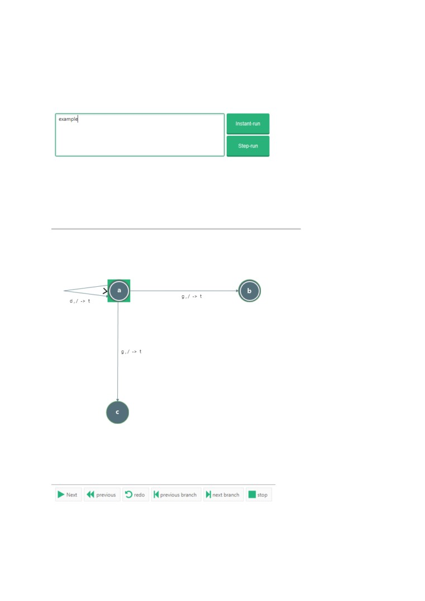
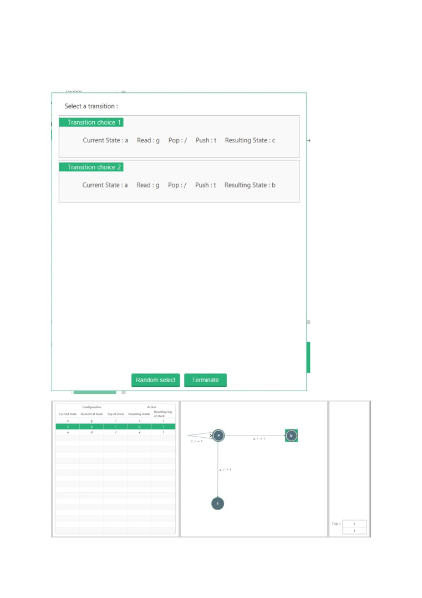
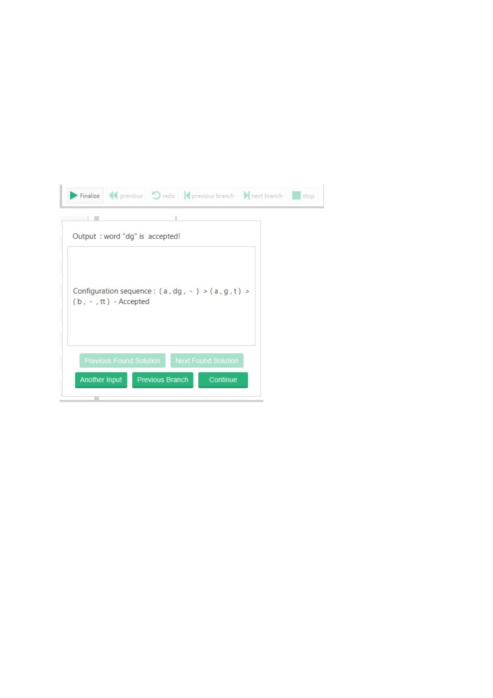
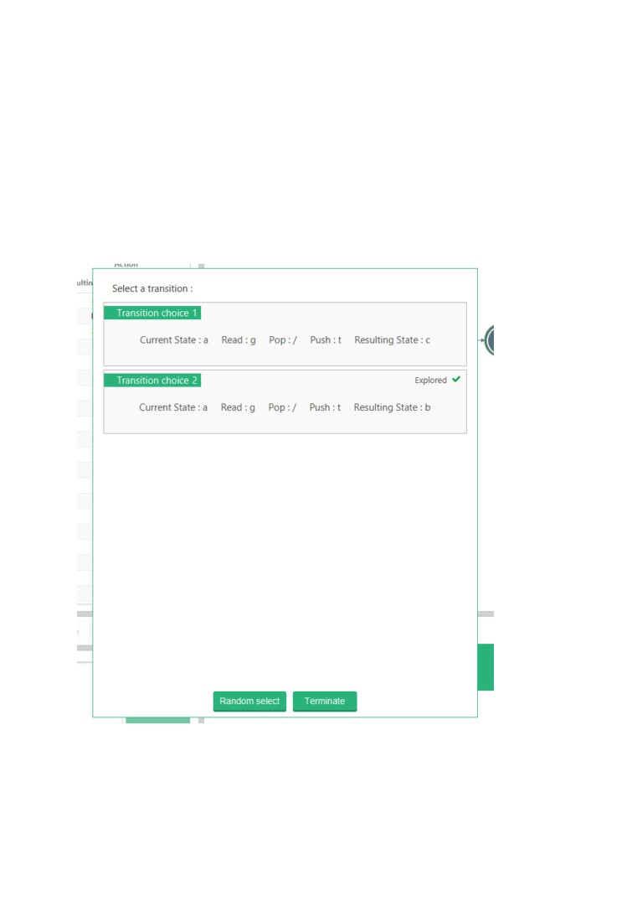
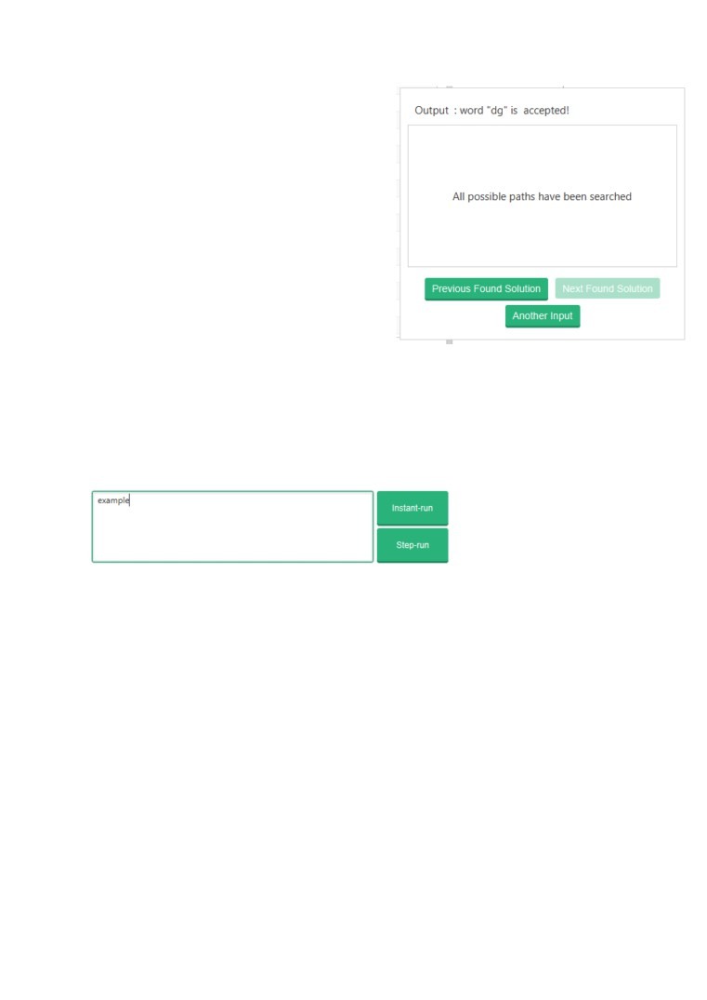

Run Modes
Step-run is a step-by-step walk-through of the run. A pre-requiste is valid input.
The user can specify input to be ran by a loaded PDA in user input section.
Click step-run to go through process.
Initially the initial state is highlighted. The highlighted state represents the current state of
the present push-down automata.
The user action buttons represent the different ways in which a user can run the input

‘next’ executes the next transition. If there are more than one possible transitions that can be
executed, then the option box is opened allowing you to select the transition that you want
to execute.

‘Previous’ goes back to a state of PDA before the transition was executed.
‘previous branching’ and ‘next branching’ both go to a point in execution where there is
more than one transition that can be executed.
‘stop’ terminates the computation.
When all input has fully been read, the PDA machine is ready to output results. You can press
‘finalize’ in the user action bar to open the results pane.

You can continue to search for alternative solutions by pressing the ‘Previous Branch’ button,
which will open a transition option dialog in the case that the PDA is non-deterministic and a
decision was made along the path on what transition to execute.
Notice how the explored tick signifies that the branch has fully been explored. By clicking on
other transition, you can explore an alternative branch.
The alternative branch doesn’t result in an accepting path. All paths for the previous
branching have been searched
Clicking on ‘previous branch’ again will reopen the transition option dialog once again, but
this time all branches have been explored. The option will be offered to you to go back to a
previous branch. If there is more branching which can alternatively be searched for a solution
then the PDA goes back to the initial state and a final determination output is made with
respect to the word and the PDA machine.

Instant-run outputs the result of an input without going through the steps.